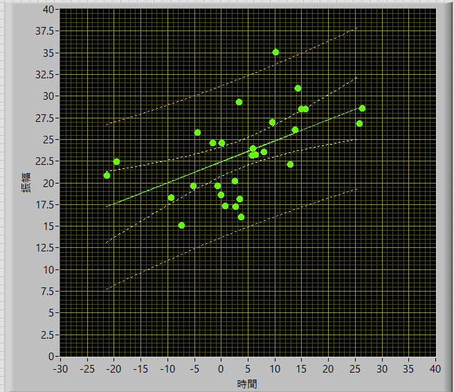
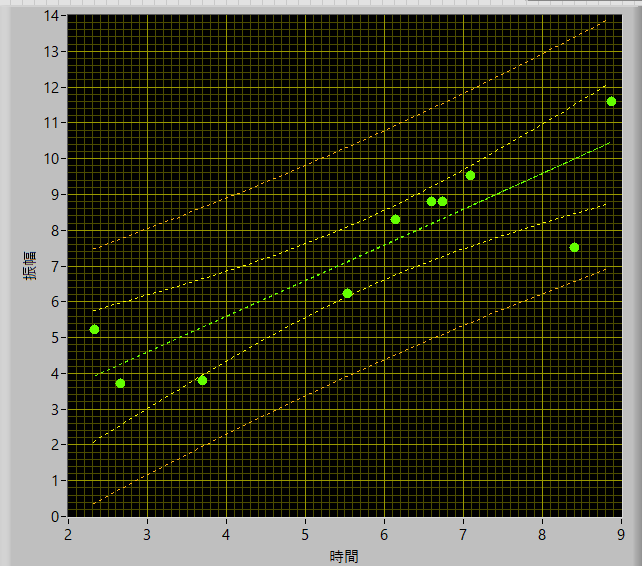
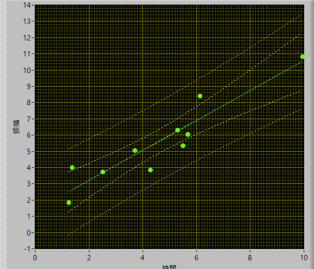
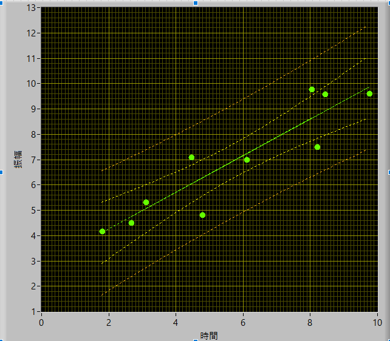
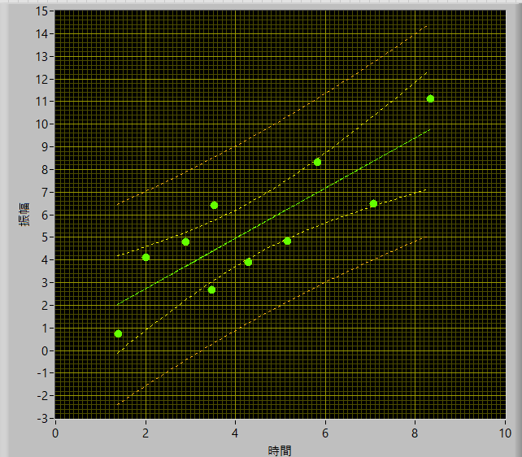
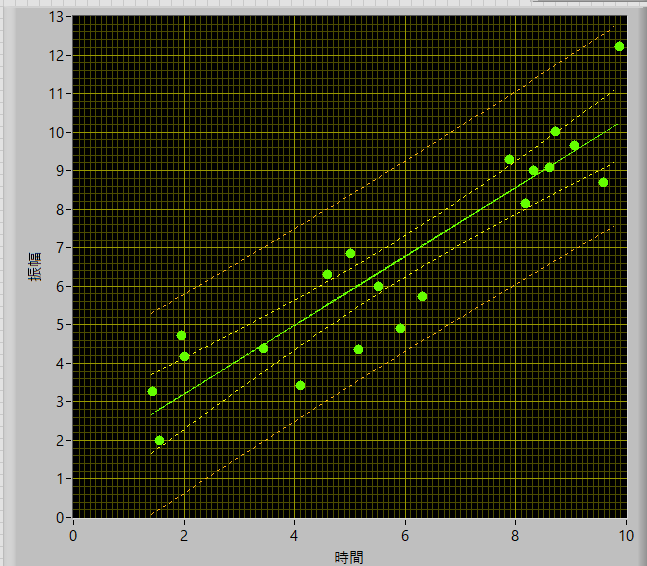
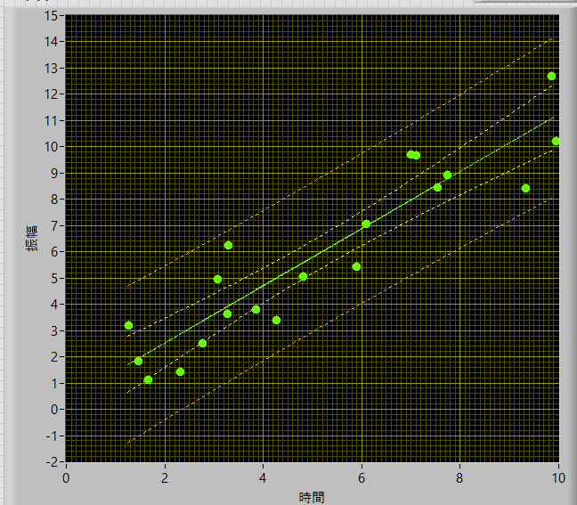
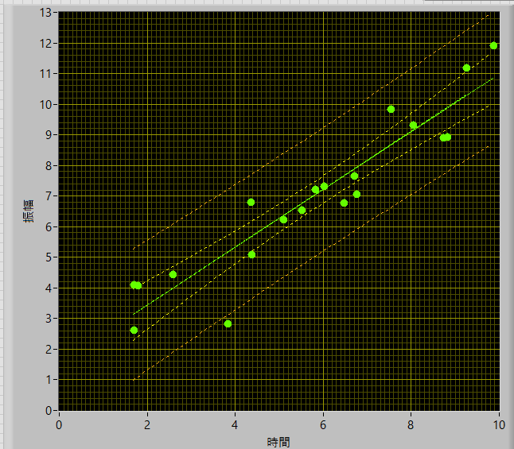
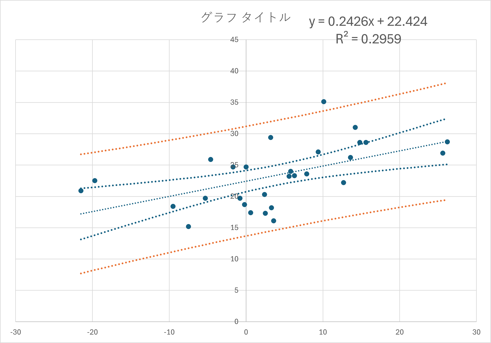

回帰分析の信頼区間-02
実際のグラフ
まずは，きちんと計算ができているかを確認するために，こちら，のサイトと同じデータを使ってLabviewで再現してみました．
その結果が，

となり，上記のサイトのグラフと一致（たぶん）していることがわかります．
ここで，
\( \Large \displaystyle y = ax+b \)
での回帰直線において，
\( \Large \displaystyle n = 29, \ \bar{x} = 3.88 \)
\( \Large \displaystyle \hat{ a} = 0.2476, \ \hat{b} = 22.4236 \)
\( \Large \displaystyle S_{xx} = 3368.48, \ S_{yy} = 670.006, \ S_{xy} = 817.193 \)
となりました．
・データ数を変化させた場合．
次に，データ数を変化させた場合，どのように信頼区間が変化するかを見ていきましょう．
ここで，
\( \Large \displaystyle y = ax+b \)
での直線において，
\( \Large \displaystyle a = 1, \ b = 1\)
\( \Large \displaystyle x_{min} = 1, \ x_{max} = 10 \)
の範囲でｘをランダムに配置し，ｙの値に，-2～2の範囲でランダム関数を加えました．
n=10




といった形で描くことができました．
n=２0



とデータ数が増えると，信頼区間が狭まることがわかります．当然，分散値に，ｎ，の項があるので当たり前といえば当たり前ですが．．
やはり，実験はたくさん行わなければなりませんね．．．
エクセルでも作ってみました．一番上の図のデータと同じです．
